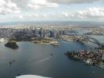
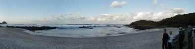

June
- 2nd
- 3rd
- 4th
- 5th
- 6th
- 7th
- 8th
- 9th
- 10th
- 11th
- 12th
- 13th
- 14th
- 15th
- 16th
- 17th
- 18th
- 19th
- 20th
- 21st
- 22nd
- 23rd
- 24th
- 25th
- 26th
- 27th
- 28th
- 29th
- 30th
July
- 1st
- 2nd
- 3rd
- 4th
- 5th
- 6th
- 7th
- 8th
- 9th
- 10th
- 11th
- 12th
- 13th
- 14th
- 15th
- 16th
- 17th
- 18th
- 19th
- 20th
- 21st
- 22nd
- 23rd
- 24th
- 25th
- 26th
- 27th
- 28th
- 29th
- 30th
- 31st
August
{kind=link}
After circling the Olympic site Klaus requested permission to do some orbits of the Harbour Bridge and the CBD (Central Business District). John's very thorough briefing helped a lot and made a quick clearance possible.

{kind=link}
Going up the coast meant a lot of work for Klaus because of much controlled air space that had to be passed through. Klaus was talking on the radio almost all the time. "Willi" (north of Newcastle) didn't clear us immediately so we had to hold for 15 minutes. That waiting time was rewarded a little later thought. "India Golf Golf be aware that an F18 Hornet is approaching you at 2000 ft" we were told. Klaus got really excited and asked the tower from what direction the F18 could be expected. Linda saw it first. It passed about 500 meters above our heads - but it didn't just pass - the pilot greeted us by rocking his wings. A brief, but GREAT view of a F18.
Ricki (our friend from Leigh Creek) was awaiting us in Port Macquarie and took us for an introductory sight seeing tour of his town - we all agreed that this would be a nice place to live. The relaxing evening with delicious food passed far too quickly.
{kind=link}
